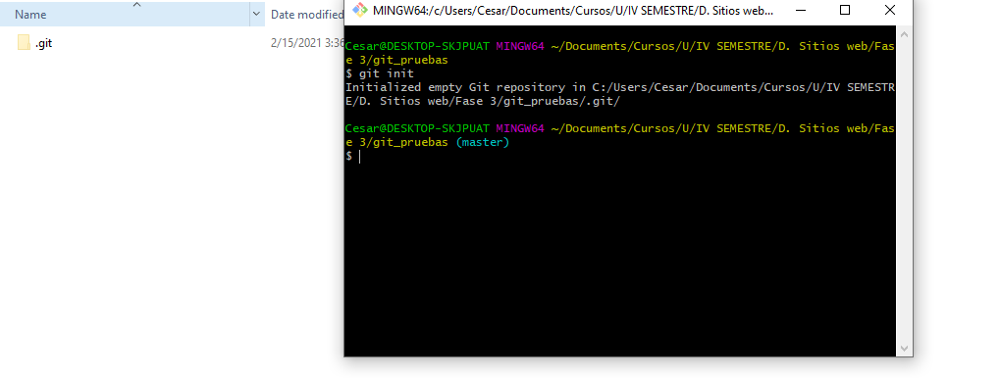
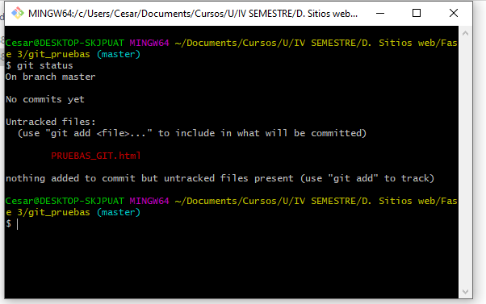
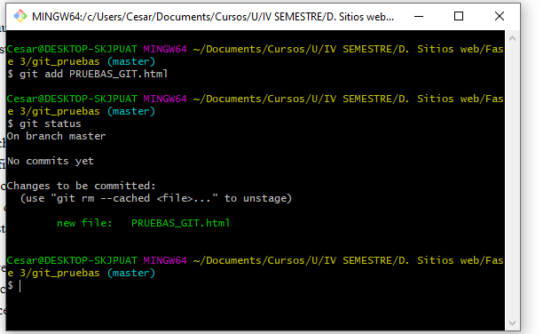
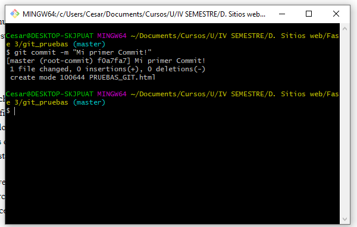

Git es un software de control de versiones que inicialmente fue diseñado y desarrollado por Linus Torvalds. Git está pensado en la eficiencia , flexibilidad y rendimiento a la hora de hacer uso y mantener nuestros proyectos de software con un correcto versionamiento.
Supongamos que tenemos un pequeño proyecto de desarrollar una pagina web. Durante este proceso ira aumentando nuestro codigo fuente debido a la implementacion de las caracteristicas que requieran nuestra pagina web.
Llegara un momento que nuestro proyecto necesite de tener un control de versiones para salvaguardar nuestro trabajo realizado hasta dicho punto , lo primero que se nos ocurriria es duplicar nuestra carpeta donde se esta desarrollando la pagina web y crear una especie de "backup".
Esta idea puede ser util en una primera instancia pero se convierte anticuada a lo largo del tiempo , que sucederia si el dia de mañana te piden implementar una nueva caracteristica (feature) a la pagina web? posiblemente lo que hagas es duplicar nuevamente la carpeta de tu proyecto inicial , implementar la caracteristica y colocarle un nombre como Pagina web V 1.2. Esta forma de trabajar se vuelve insostenible ya que llegara un momento en que tendras demasiadas carpetas "backups" que no te seran utiles porque se vuelve muy complejo la revision y la integracion.
Aqui es donde entra Git para solucionar estos incovenientes y mejorar ampliamente el control de versiones de nuestros proyectos. Con unos simples comandos de esta herramienta podremos mapear de forma robusta todo nuestro trabajo a lo largo del tiempo y navegar de forma eficiente y facil como si fuera un viaje a lo largo del tiempo sobre nuestras versiones y estados del codigo fuente en algun tiempo pasado del desarrollo.
Para empezar a trabajar con GIT requerimos crear nuestro repositorio local , que no es mas que un subdirectorio oculto llamado ".git" es aqui donde reside toda la "magia" que hace git por nosotros. Para crear el repositorio debemos ejecutar en la terminal de comandos lo siguiente:
esto creara nuestro subdirectorio .git
Una vez comencemos a editar nuestros ficheros de cualquier tipo , Git empezara a detectar todos estos cambios y podremos consultarlo a traves del siguiente comando
este comando nos indica que ficheros han sido modificados , eliminados , añadidos y cuales ficheros aun no estan versionados en el repositorio de git. Por ejemplo , si modificamos un archivo index.html , el comando git nos dira que este archivo ha sido editado y que sus nuevos cambios no estan guardados en el repositorio.
Hasta este punto , no tenemos versionado y "salvaguardados" los nuevos cambios hechos en el archivo index.html en nuestro repositorio. Para hacer este procedimiento requerimos de dos nuevos comandos:
Llegados a este punto solo nos queda hacer "commit" para tener salvaguardados todos los cambios que hayamos implementado en nuestro codigo fuente.
una vez hecho esto , nuestro codigo fuente actual quedara salvaguardado en el repositorio , pudiendolo consultar ese estado especifico en cualquier momento del desarrollo sin temer que algo se nos pierda o dañe.